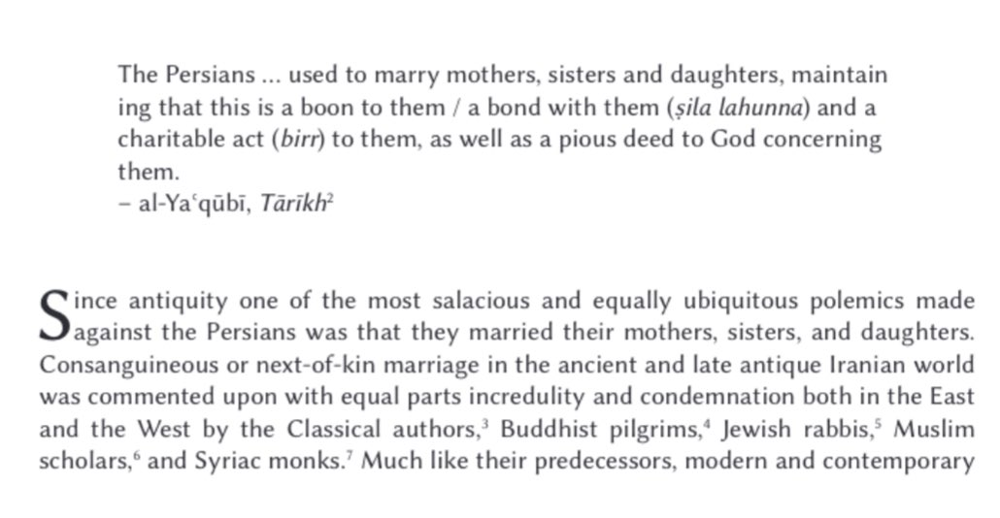

Polytheism and corruption from Zoroaster’s original teaching
——
Incest in Zoroastrianism
https://muslimskeptic.com/2022/08/13/holy-incest-in-zoroastrianism/

Here's a fact:
Zorostarians believed that a woman's virginity was property of the family (xwedodah), and can only be taken by the brother or father
After Islam civilized Persia, this practice was slowly gotten rid of due to Muslims making fun of it
tandfonline.com/doi/full/10.10…
https://www.cambridge.org/core/books/abs/sexuality-in-the-babylonian-talmud/pahlavi-doctrine-of-xwedodah/F04DFC08C8E1F3AFE674002E2509780C
https://utpress.utexas.edu/9780292747678/witches-whores-and-sorcerers/
The first documentary proof of "xwēdōdah" was recently discovered in a legal text written in Pahlavi from 8th-century Tabaristan.
The document, dated to 732-33 AD, concerns the transfer of property rights after the death of a man called Rahāg. Under certain conditions, the document states, his property should pass to his wife, a woman named Duxtxwašīh, who was also his granddaughter.
The document belongs to a larger collection of 33 Pahlavi texts, mostly of a legal nature, written in eighth-century Tabaristan. This mountainous region of northern Iran (today known as Mazandaran) resisted annexation by the Muslims until the 760s.
As a result, Zoroastrians and Zoroastrian law remained dominant for far longer than in other parts of Iran. As Maria Macuch has shown, there are very precise parallels between the legal system in the documents and what we know about law under the pre-Islamic Sasanian kings.
The image of the document, along with an edition and translation, comes from: Dieter Weber, "Pahlavi Legal Documents from Tabarestān: The Documents Tab. 11, 28, and 27: A Philological Approach," Res Orientales 28 (2020), 172-75.
Astute analysis of its legal content can be found in: Maria Macuch, "Pahlavi Legal Documents from Tabarestān: Two Claims Involving 'Substitute Succession' and a Payment Commitment. The Juristic Context of Tab. 11, 28 and 27," Res Orientales 28 (2020), 191-99
https://www.academia.edu/61397165/2020_Pahlavi_Documents_from_Tabarest%C4%81n_Two_Claims_Involving_Substitute_Succession_and_a_Payment_Commitment_The_Juristic_Context_of_Tab_11_28_and_27_In_Persia_552_BCE_758_CE_Primary_Sources_Old_and_New_Res_Orientales_XXVIII_ed_Rika_Gyselen_Bures_sur_Yvette_2020_pp_189_216
An earlier attempt to decipher the document can be found in: Philippe Gignoux, "Une archive post-sassanide du Tabaristān (II)," Res Orientales 22 (2014), 34-37.
——
Zoroastrianism is Dying
https://www.nytimes.com/2006/09/06/us/06faith.html
https://www.theguardian.com/world/2020/aug/06/last-of-the-zoroastrians-parsis-mumbai-india-ancient-religion
——
Hypocrisy of Those Who Criticize Muslim Conquests of Persia
In Zoroastrianism you can forefully marry and rape your sister
"Purification" using cow/bull urine and urine of sisters and mothers
The Shirk of Fire Worship in Zoroastrianism
https://muslimskeptic.com/2022/02/02/the-strange-rules-of-fire-in-zoroastrianism/